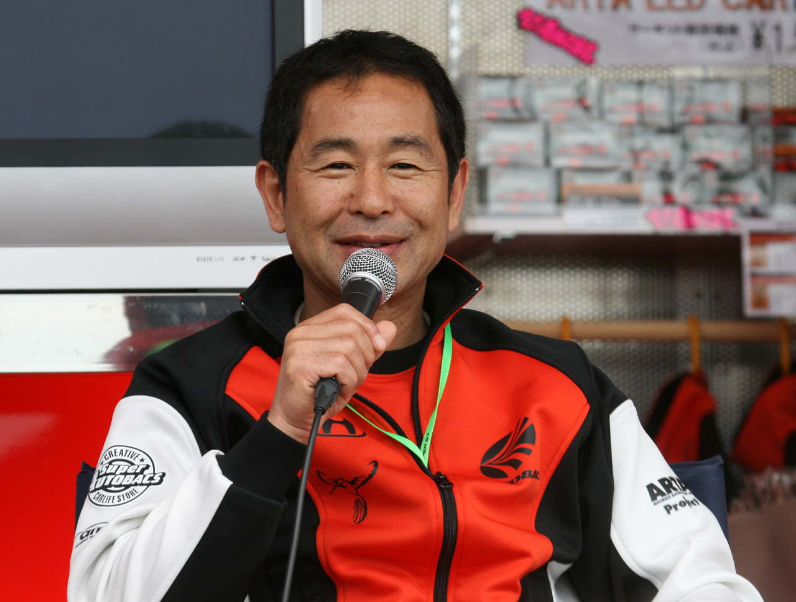
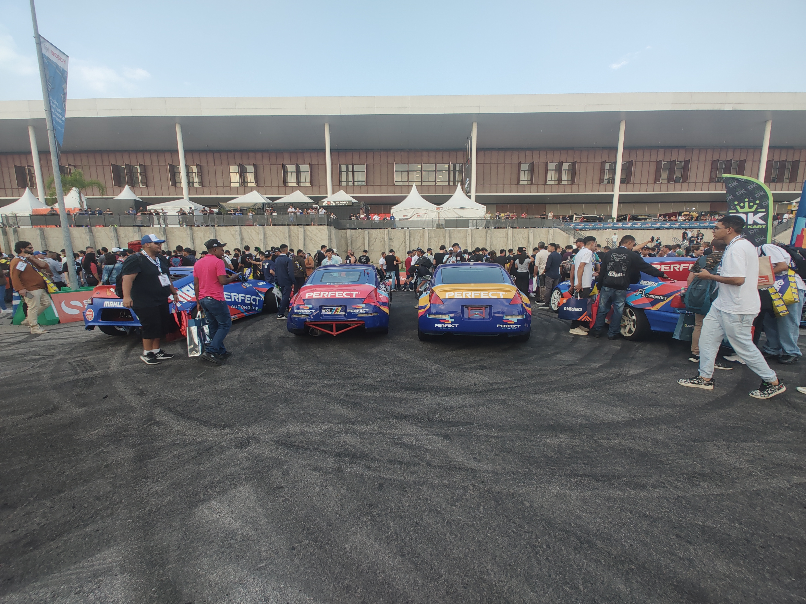
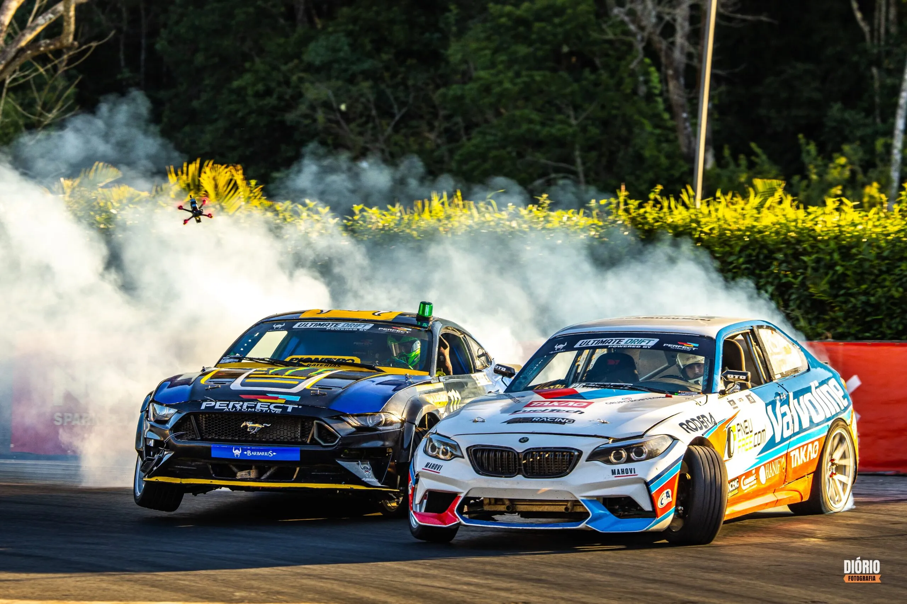

A Automec 2025, maior feira de negócios do setor automotivo na América Latina, trouxe uma experiência inédita e eletrizante para seus visitantes: a Ultimate Drift. A competição de drift, modalidade que desafia a habilidade dos pilotos em controlar derrapagens precisas, dominou a Arena Perfect, espaço dedicado às apresentações de alta performance durante o evento realizado no São Paulo Expo.
Ultimate Drift é o maior campeonato brasileiro de drift, reunindo mais de 50 pilotos profissionais e amadores que competem em etapas pelo país, com destaque para a temporada 2025 que conta com transmissão ao vivo pela MAVTV Brasil. A modalidade, que tem crescido exponencialmente no Brasil, consiste em fazer o carro deslizar de lado nas curvas, com controle absoluto do piloto, transformando velocidade e técnica em um espetáculo para o público.

Na Automec 2025, a Ultimate Drift teve papel central ao levar emoção e tecnologia para os visitantes. A RX, organizadora da feira, em parceria com a Ultimate Drift, criou uma programação diária de apresentações na Arena Perfect, onde pilotos profissionais desafiaram os limites dos carros e seus componentes diante de um público entusiasmado. A competição não só divertiu, mas também mostrou a resistência e a qualidade das peças automotivas usadas nos veículos, que são as mesmas aplicadas em carros de rua, como pneus, freios e suspensões.
Essa ação é irreversível.